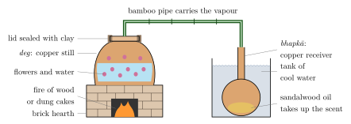

Chapter 5: Gardens, Flowers and Aromatics¶
The garden texts of the previous chapter teach how to raise and tend plants; they say little about what the gardens produced or what was done with it. This chapter turns from the treatises to the products. Flowers were needed every day for worship, adornment, welcome and festivity; they were grown and strung by particular communities and, in the south, in temple gardens supported by endowments. Fragrant woods, roots, resins and flowers, and a few animal products, were the materials of a perfumery that Varāhamihira already treats as a branch of learning and that survives in the attar distilleries of Kannauj. The betel leaf and the areca nut, grown in specialised gardens, made the quid that was offered at every social occasion. The botanical identity of many of the Sanskrit names involved is uncertain, and the chapter gives the usual identifications with that caution. Plants valued chiefly as medicines are treated in Chapter 12, and the sacred trees in Chapter 11.
5.1 Flowers in Indian Culture and Cultivation¶
Many of the trees, shrubs and creepers that the vṛkṣāyurveda texts teach the gardener to tend (Chapter 4) were grown for their flowers. Flowers (puṣpa) were needed every day and in quantity: for worship, for personal adornment, for garlands given in welcome and in honour, for the decoration of houses and festivals, and as the raw material of perfumes. In the common Hindu form of worship with five offerings (pañcopacāra), the deity receives scent (gandha), flowers (puṣpa), incense (dhūpa), a lamp (dīpa) and food (naivedya). Three of the five thus come from the garden and the perfumer. The eightfold worship (aṣṭaprakārī pūjā) of many Jain temples likewise includes sandalwood paste, flowers and incense, although some Jain communities avoid offering fresh flowers out of concern for the life in them. Flowers are offered at Buddhist shrines, and garlands and sheets of roses are laid on the graves of Sufi saints. The demand for flowers in India has therefore always been large, steady and seasonal. It supported specialised growers, garland-makers and sellers (Section 5.2).
This section surveys some of the flowers that matter most in Indian culture. The botanical identity of Sanskrit flower names is often uncertain. A single name may have been applied to different plants in different regions and periods, and one plant may have many names, some of them poetic epithets. Table 5.1 gives the usual identifications, which should be read with that caution. The sacred trees valued chiefly for themselves rather than for their flowers, such as the aśvattha, the banyan and the bilva, are treated in Chapter 11.
| Sanskrit name | Usual identification | Remarks |
|---|---|---|
| padma, kamala, aravinda | Sacred lotus, Nelumbo nucifera | Pink or white; rhizome and seeds eaten |
| utpala, nīlotpala | Water-lily, especially the blue Nymphaea nouchali (syn. N. stellata) | Colour-names of water-lilies are applied variously |
| kumuda | White night-flowering water-lily (Nymphaea sp.) | The poets’ flower of the moon |
| mallikā | Arabian jasmine, Jasminum sambac | Hindi mogrā, bela; Tamil malli |
| mālatī, jāti | Usually Jasminum grandiflorum | Identity of mālatī debated |
| yūthikā | Jasminum auriculatum | Hindi juhī |
| campaka | Magnolia champaca (syn. Michelia champaca) | Not the American frangipani, also called “champa” |
| aśoka | Saraca asoca | Not the avenue tree Polyalthia longifolia |
| bakula | Mimusops elengi | Small flowers that keep their scent when dry |
| kadamba | Usually Neolamarckia cadamba | The name may cover more than one tree |
| pārijāta, śephālikā | Night jasmine, Nyctanthes arbor-tristis | The mythical pārijāta is not necessarily this plant |
| ketakī | Screw-pine, Pandanus odorifer | Source of kewṛā water and attar |
5.1.1 Lotus and water-lily¶
No flower is more important in Indian culture than the lotus. The Sanskrit names padma, kamala, aravinda, paṅkaja (“mud-born”) and many others denote the sacred lotus, Nelumbo nucifera. Its large pink or white flowers and round leaves stand above the water on long stalks. The English word “lotus” is also used for the water-lilies (Nymphaea), whose leaves and flowers usually float on the surface. In Sanskrit these are utpala, especially the blue nīlotpala, and kumuda, the white water-lily that opens at night. The two genera are not closely related; botanists place Nelumbo in a family of its own, far from the water-lilies. Sanskrit poets also kept them apart. By convention the kamala opens to the sun and closes at dusk, the kumuda opens at moonrise, and the two are paired as the flowers of day and night.
The lotus is everywhere in Indian religious art. Lotus medallions cover the railings of the early Buddhist stūpas at Bharhut and Sanchi. There the goddess Śrī-Lakṣmī is shown on a lotus, bathed by two elephants, in the motif later called Gaja-Lakṣmī. In Hindu iconography Brahmā is born from a lotus that rises from Viṣṇu’s navel, and Lakṣmī holds lotuses in her hands. Hindu, Buddhist and Jain images alike stand or sit on lotus pedestals. Because the plant rises clean from the mud, it became a symbol of purity in the midst of worldly life. The Bhagavad Gītā (5.10) compares the person who acts without attachment to a lotus leaf, which water does not wet. The water-repellent surface of the lotus leaf is real, and botanists now speak of the “lotus effect”. The Gītā uses an everyday observation as a moral image; it does not offer a theory of surfaces.
Lotuses and water-lilies were grown in the tanks and ponds of gardens, palaces and temples, and the garden texts include water plants among those to be planted. The lotus was also a food plant. Its rhizome (bisa, mṛṇāla) and seeds have long been eaten, and both are still sold in Indian markets (Achaya 1998). The lotus stem is a familiar vegetable in Kashmir, where it is called nadru. The puffed “fox nut” of north Indian snack foods, makhānā, is often called a lotus seed but comes from a different water plant, the prickly water-lily Euryale ferox. It is cultivated in the ponds of Mithila in north Bihar, much of it by the Mallāh, a community of boatmen and fishers.
5.1.2 Jasmines¶
The jasmines (Jasminum) are the flowers of the garland and of the hair. Sanskrit literature distinguishes several kinds by name, but the names are hard to pin to species. Mallikā is generally identified with Jasminum sambac, the “Arabian” jasmine. Despite its English name it is a plant of South and Southeast Asian cultivation, a shrub with intensely fragrant white flowers, single or double, that open in the evening (Hindi mogrā or bela, Tamil malli). Mālatī and jāti are usually taken to be the large-flowered jasmine, J. grandiflorum (Hindi camelī), though other identifications of mālatī have been proposed. Yūthikā is the juhī, J. auriculatum. Kunda, a flower of the cold season whose whiteness poets compare to teeth and to the moon, is commonly identified with a jasmine such as J. multiflorum, but the identification is not certain.
Jasmine is grown commercially on small plots, mostly by smallholders. The buds are picked early in the morning, much of the picking being done by women, so that they open on the day of sale. Buds are strung tightly on thread to make the hair ornaments called veṇī or gajrā and the garlands of temples and weddings. In Tamil Nadu jasmine strings are still sold by the muḻam, the length of a forearm, the same unit as the hasta by which Varāhamihira measured the spacing of trees (Section 4.3). The jasmine of the Madurai region is especially prized and has been registered as a geographical indication.
5.1.3 Flowering trees¶
The campaka, Magnolia champaca (formerly Michelia champaca), is a tall evergreen tree with fragrant cream, yellow or orange flowers. It was planted in gardens and by temples, and its flowers were worn in the hair and used in perfumes. A familiar poetic convention holds that bees do not visit the campaka. The name “champa” is now also given in many Indian languages to the frangipani or temple tree (Plumeria). This is a small tree of tropical America, brought to India after 1500, which is now planted around temples, tombs and cemeteries across the country. Older texts that mention the campaka cannot refer to it.
The aśoka, Saraca asoca, is a small evergreen tree with dense clusters of orange to scarlet flowers. Its name means “without sorrow”. It is the tree whose blossoming, in poetic convention, is brought on by the touch of a young woman’s foot (Section 4.3.8). In the Rāmāyaṇa Sītā is held captive in Rāvaṇa’s aśoka grove in Laṅkā. The true aśoka should not be confused with the tall, narrow Polyalthia longifolia. That tree is widely planted along avenues and is often called “ashoka” today, but it has inconspicuous flowers and no place in the classical literature. Because the bark of Saraca asoca is collected for medicinal use, the tree has become scarce in the wild in parts of its range (see Chapter 12).
The bakula (Mimusops elengi, Tamil makiḻam) bears small, star-shaped cream flowers. They keep their fragrance for a long time after drying and are strung into garlands. In poetic convention the bakula flowers when sprinkled with wine from a woman’s mouth. The kadamba, usually identified with Neolamarckia cadamba, has globular orange flower-heads that open with the rains. It is the tree of the monsoon in Sanskrit poetry and of Kṛṣṇa’s youth in Vraja (Chapter 11). As with many tree names, kadamba may have been applied to more than one species.
The pārijāta of everyday use is the night jasmine, Nyctanthes arbor-tristis, also called śephālikā (Hindi harsiṅgār, Bengali śiuli). Its white flowers with orange tubes open at night and fall at dawn, carpeting the ground beneath the tree. Fallen flowers are gathered for worship, and the orange corolla tubes were used as a yellow-orange dye. The name also belongs to a mythical tree, one of the treasures that emerged at the churning of the ocean and which grew in Indra’s paradise. In the Harivaṃśa and the Viṣṇu Purāṇa Kṛṣṇa carries it off from heaven for his wife Satyabhāmā. The mythical pārijāta need not be the night jasmine. Some texts and regions give the name to the coral tree (Erythrina), and the identification varies.
Other flowers have special ritual uses. The red hibiscus (japā, Hibiscus rosa-sinensis) is offered to Kālī and other goddesses, especially in Bengal. According to a Purāṇic story, the fragrant ketakī (screw-pine, Pandanus odorifer) may not be offered to Śiva, because it once bore false witness on behalf of Brahmā. The oleander (karavīra, Nerium oleander), red or white, is widely offered in worship, although every part of the plant is poisonous.
5.1.4 Newcomers: marigold, tuberose and the rose¶
Some of the flowers most closely associated with India today are not Indian in origin. The marigold, which supplies most of the orange and yellow garlands of temples, weddings, festivals and funerals, belongs to the genus Tagetes, native to Mexico and Central America. The large African marigold (T. erecta) and the smaller French marigold (T. patula) both came from the Americas. Their English names are misnomers. They reached India after 1500, most probably through Portuguese and other European shipping, and became indispensable within a few centuries. They are easy to grow, flower over a long season, and are cheap. The marigold (Hindi gendā) is now among the most widely grown flower crops in India. Since the plant was unknown in India before the sixteenth century, “marigold” in translations of older Sanskrit texts is a mistranslation. The tuberose (Polianthes tuberosa, Hindi rajnīgandhā), whose night-scented white spikes are used in garlands and perfumery, is also Mexican in origin. Its history in India likewise begins after contact with the Americas.
The rose has an older but similar history. Wild roses grow in the Himalaya, and Sanskrit lexicons contain names such as śatapatrī, “hundred-petalled”, that some lexicographers take to mean a rose. But śatapatra is also a name of the lotus, and the rose has no place in classical Sanskrit poetry comparable to that of the lotus or jasmine. The rose became a garden flower of the first rank in India through the Persianate world. In Persian poetry the rose (gul) and the nightingale (bulbul) are the central images of love. In the gardens of the Sultanate and Mughal periods (Chapter 18) roses were planted in quantity, among them the damask rose (Rosa damascena), the rose of perfumers. The Hindi gulāb comes from Persian gul-āb, “rose-water”, a name transferred from the distillate to the flower. Rose-water, rose attar and gulkand, a preserve of rose petals in sugar, became part of the courtly culture of northern India. Rose growing for distillation became established around particular towns, among them Kannauj and Ghazipur in Uttar Pradesh and Pushkar in Rajasthan. The naturalistic flowering plants carved and inlaid in Mughal buildings of Shāh Jahān’s reign, including the Taj Mahal, show how important flowers had become in imperial imagery.
5.1.5 Flowers in poetry¶
Flowers form a large part of the conventions of Sanskrit poetry (kāvya). Kāma, the god of love, shoots arrows made of flowers. In a commonly cited list the five arrows are the lotus (aravinda), the aśoka, the mango blossom (cūta), the navamallikā jasmine and the blue water-lily (nīlotpala). Each season has its flowers. Spring (vasanta) brings the mango blossom, the aśoka, the red kiṃśuka (palāśa, Butea monosperma) and the bees maddened by them. The rains bring the kadamba and the ketakī; autumn brings the lotus-filled ponds and the saptacchada (Alstonia scholaris); the cold season brings the kunda and the lodhra. The Ṛtusaṃhāra, a poem on the six seasons attributed to Kālidāsa (the attribution has been doubted), is built around such pairings. The bee (bhramara, ṣaṭpada) drawn from flower to flower is the stock image of the fickle lover. The birds that accompany these flowers in poetry, the haṃsa, the cakravāka and the kokila, are discussed in Chapter 17.
The Tamil tradition has its own system. The five landscapes (tiṇai) of Saṅgam love poetry (Chapter 2) take their names from characteristic flowers or plants. Kuṟiñci is usually identified with Strobilanthes kunthiana, a shrub of the southern hills that flowers en masse only once in about twelve years. Mullai is a jasmine. Neytal is usually taken to be a water-lily, and marutam and pālai are trees whose identifications are debated. The poems use the flowers to signal both a landscape and a phase of love. These conventions are literary, but they rest on close acquaintance with real plants: their seasons, habitats, colours and scents.
5.2 Garland-makers, Flower Markets and Temple Gardens¶
Behind the flowers of worship and poetry stood the people who grew, picked and strung them. The Sanskrit mālākāra, “garland-maker”, names a recognised occupation in Sanskrit literature and appears often in Buddhist and Jain narrative literature, where garland-makers sell flowers in the market and offer them to the Buddha or to Jain teachers. In the modern languages the corresponding communities are known by names such as Mālī (in much of northern and western India), Mālākār (in Bengal and Assam) and Phūlmālī. Like other occupational groups they were ranked within the caste order. Their position varied by region, generally among the cultivating and service castes, below the landholding castes for whom they often worked. The Mālīs were also market gardeners, growing vegetables as well as flowers on irrigated plots near towns. The social reformer Jotirao Phule (1827–1890) came from a Mālī family of Pune whose surname is said to derive from their work supplying flowers (phūl). He made the condition of the cultivating and labouring castes central to his critique of caste. In Bengal Mālākār craftsmen also make the white śolā-pith ornaments used on images of deities and at weddings (see Volume 17, Śilpa–Kāru).
Flowers were sold daily in town markets, and the flower-seller is a stock figure of Sanskrit and vernacular literature. Large wholesale markets, such as Mallick Ghat beside the Howrah Bridge in Kolkata and the Dadar market in Mumbai, open before dawn and continue an old pattern, linking the growers of the surrounding countryside with retailers outside temples and in residential streets. The volume of flowers used in temples has itself become a problem, since used offerings are often thrown into rivers; some temples and private enterprises now collect them for composting or for making incense. In Delhi, the festival of the flower-sellers, Phūlwāloṃ kī Sair, honours this trade. Large fans of flowers (paṅkhā) are carried in procession and offered both at the Sufi shrine of Quṭb al-Dīn Bakhtiyār Kākī and at the Yogmāyā temple in Mehrauli. According to the usual account the festival began in the early nineteenth century, in the reign of the Mughal emperor Akbar Shāh II, in fulfilment of a vow; it was revived after Independence.
Temples needed a constant supply of flowers, leaves and garlands, and many maintained their own flower gardens, called nandavana (Tamil nantavaṉam), after Nandana, the garden of Indra’s heaven. South Indian temple inscriptions of the Cōḻa, Pāṇḍya, Vijayanagara and later periods frequently record endowments for this purpose: grants of land or money to maintain a flower garden, to pay gardeners and garland-makers, to dig or maintain a well or tank to water the garden, or to supply a fixed quantity of flowers and garlands for daily worship and festivals. Flower-growing was thus an institution with its own staff and revenues, alongside the temple’s kitchens and lamps. Temple gardens also figure in devotional tradition. According to the hagiographies of the Tamil Vaiṣṇava saints, Periyāḻvār tended a garden at Srivilliputtur and made garlands for the god there. His daughter Āṇṭāḷ, who was found as an infant in the garden, secretly wore the garlands before they were offered. Hence her epithet Cūṭikkoṭutta Cuṭarkkoṭi, “the radiant creeper who gave (the garland) after wearing it”. Toṇṭaraṭippoṭi Āḻvār is likewise said to have kept a flower garden for the temple at Srirangam. These are hagiographical traditions, not historical records, but they show how closely the work of the garden was bound up with devotion.
The vṛkṣāyurveda texts say little about flower farming as a trade; their concern is the garden of a patron. But their advice applied equally to temple and market gardens, and some of their marvels, such as changing a flower’s colour or scent (Section 4.3.9), were plainly aimed at the flower garden.
5.3 Perfumery and Aromatics¶
Scent mattered greatly in Indian culture. In the Nyāya–Vaiśeṣika philosophical schools smell (gandha) is the distinctive quality of earth, one of the five elements, and in ordinary life fragrance marked purity, festivity, wealth and the divine presence. Bad smells marked impurity and death. Perfumes were used on the body, in the hair, on clothes, in the mouth, in the house and in worship. Many of their ingredients came from plants grown in gardens or gathered from forests, and some came from animals. James McHugh’s study of smell in Indian religion and culture is the best general guide to this subject (McHugh 2012). The ingredients mentioned in the texts and their trade across the Indian Ocean also concern Volume 19, Vāṇijya and Samudra, and the history of distillation concerns Volume 14, Rasāyana.
5.3.1 Gandhayukti: the art of combining scents¶
The Sanskrit term for perfumery is gandhayukti, “the combining of scents”. Lists of the sixty-four arts (kalā) expected of a cultivated person, such as the list in the Kāmasūtra, include it. Varāhamihira’s Bṛhatsaṃhitā has a chapter of that name (Bhat 1981). It gives preparations for scenting the hair, the body, the mouth and clothes, and for incense to perfume the house, compounded from a set of aromatic ingredients in stated proportions. Historians of mathematics have noticed this chapter because in one passage Varāhamihira counts how many different perfumes can be made by combining ingredients drawn from a fixed set, an early instance of combinatorial reasoning in Sanskrit. The chapter is a reminder that the Bṛhatsaṃhitā, the source of the oldest systematic vṛkṣāyurveda (Section 4.1.1), treated the garden and the products made from it as one field. Later, more specialised works on perfumery survive in Sanskrit manuscripts, and McHugh discusses this literature (McHugh 2012).
At the Mughal court perfumery was organised as a department of the imperial household. Abū’l-Faẓl’s Āʾīn-i Akbarī describes the imperial perfumery, lists perfumes and their prices, and gives the composition of several compound scents (Abū’l-Faẓl 1873).
5.3.2 Sandalwood¶
Sandalwood (candana, Santalum album) is the pre-eminent Indian aromatic. The tree is small and evergreen, native to the dry forests of the southern peninsula, especially Karnataka and Tamil Nadu. It is a hemiparasite: although it has green leaves, its roots attach to the roots of neighbouring plants and draw water and nutrients from them. Young plants therefore need host plants to grow well, a fact that long frustrated attempts to raise sandalwood in pure plantations. The fragrant part is the heartwood and the roots of mature trees, from which the essential oil is distilled. In Sanskrit poetry sandalwood is malayaja, “born on the Malaya mountains” of the southern Western Ghats, and its paste was smeared on the body in the hot season for its cooling feel. Sandal paste marks the forehead in worship, sandalwood is burned on funeral pyres by those who can afford it, and Parsis offer sticks of sandalwood to the sacred fire. The red sanders (raktacandana, Pterocarpus santalinus) of the southern Eastern Ghats is an unrelated tree. Its wood is red and nearly odourless, and it is valued for dye and for timber.
Sandalwood was traded from south India to the Middle East, East Asia and Europe for many centuries. In Mysore it became a state monopoly: Tipu Sultan is said to have declared it a royal tree, and under the later Mysore government and British rule its felling and sale were tightly controlled. In 1916, when the First World War cut off the export of sandalwood to Germany for distillation, the Mysore government set up its own sandalwood oil factory at Bangalore, and a soap factory soon followed; its sandalwood soap became widely known. Watt’s Dictionary gives a full account of the sandalwood trade and its regulation in the late nineteenth century (Watt 1889).
In the twentieth century wild sandalwood declined sharply. The causes were over-exploitation, large-scale smuggling encouraged by state control and high prices, the loss of forest habitat, and a disease called spike, now attributed to a phytoplasma. Santalum album has been listed as Vulnerable on the IUCN Red List. Since the early 2000s Karnataka and Tamil Nadu have relaxed the rules that made all sandalwood the property of the state, in order to encourage growing on private land. Meanwhile, plantations of Indian sandalwood in northern Australia have become a major source of supply. Sandalwood is often cited as a case in which a state monopoly, intended to protect a valuable resource, contributed to its depletion by giving the people on whose land the trees grew no reason to protect them.
5.3.3 Agarwood, musk and camphor¶
Agaru (agarwood, aloeswood, the ʿūd of Arabic perfumery) is the resin-laden heartwood of trees of the genus Aquilaria. In India the chief source is A. malaccensis (syn. A. agallocha) of the north-eastern forests. Healthy wood is pale and scentless. The dark, fragrant resin forms only in response to wounding and infection by fungi, so that only a small proportion of trees in the wild contain it. In Sanskrit poetry agaru smoke scents palaces and the hair of women, and kṛṣṇāguru, “black agaru”, is a mark of luxury. Assam, and the town of Hojai in particular, is the main Indian centre of agarwood distillation and trade. Wild trees have been heavily over-harvested, and Aquilaria species are listed in Appendix II of CITES, which regulates international trade. Growers in Assam and elsewhere now cultivate the trees and induce resin formation artificially.
Musk (kastūrī, also mṛganābhi, “deer’s navel”) is an animal product. It is the secretion of a gland in the abdomen of the male musk deer (Moschus spp.) of the Himalaya. The gland was removed from deer that were hunted for it, and musk was among the most precious ingredients of Indian, Persian, Arab and Chinese perfumery. The image of the musk deer roaming the forest in search of a scent that comes from its own body is a familiar one in Hindi devotional poetry, often attributed to Kabīr. Musk deer are now protected under Indian wildlife law, and international trade in musk is controlled under CITES (see Chapter 16). Modern perfumery uses synthetic musks.
Camphor (karpūra) is burned in the āratī lamp, especially in south Indian temples, and was a prized ingredient of courtly betel quids. Two different natural products are involved. The camphor of early Indian Ocean trade came largely from Dryobalanops aromatica, a tall tree of Sumatra and Borneo in whose trunk crystals of borneol form; it is known in Hindi as bhīmsenī kapūr. The common camphor of later trade was obtained by distilling the wood of the camphor laurel, Cinnamomum camphora, a tree of China, Taiwan and Japan. Neither tree is native to India. Most camphor sold today is synthetic, made from turpentine. Camphor is poisonous if swallowed, particularly to children (see the safety note in Section 5.4).
5.3.4 Vetiver¶
Vetiver (uśīra; Hindi khas) is a tall, tufted grass, Chrysopogon zizanioides (syn. Vetiveria zizanioides), with a deep, dense mass of fragrant roots. In north India the roots were woven into screens (khas kī ṭaṭṭī) hung in doorways and windows in the hot season and kept wet. Air blowing through them was cooled by evaporation and scented. The roots are distilled for an essential oil, and khas attar and the more concentrated rūḥ-i khas are products of Kannauj. The Hindi word khaskhas, for poppy seed, is unrelated and should not be confused with khas. Because its roots go deep and its clumps form dense hedges, vetiver has also been promoted since the late twentieth century for soil and water conservation on slopes and field boundaries (see Chapter 7).
5.3.5 The attar distillers of Kannauj¶
The word attar (Arabic and Persian ʿiṭr, “perfume”) denotes in India a natural perfume made by distilling flowers, herbs, spices or woods. The distillate is traditionally collected in a base of sandalwood oil. Kannauj, on the Ganga in Uttar Pradesh and an ancient city (Kānyakubja) that was the capital of the Maukharīs, of Harṣa and later of the Gurjara-Pratihāras, is the best-known centre of the craft and is often called India’s perfume capital. Local tradition gives its perfumery a very long history. The reliable record, however, belongs mainly to the Mughal and later periods, and the industry in its present form took shape in the nineteenth and twentieth centuries. Kannauj perfume has been registered as a geographical indication.
The Kannauj method is known as deg-bhapkā, after its two main vessels (Figure 5.1). Flowers or other raw material are loaded with water into a large copper still (deg), set into a brick hearth and fired with wood or cow-dung cakes. The lid is sealed with clay. The vapour passes through a bamboo pipe into a copper receiver (bhapkā) that already contains sandalwood oil and stands in a tank of cool water. The aromatic vapour condenses into the oil, which absorbs the scent. The still is recharged with fresh flowers and the process repeated, often over several days, until the oil is saturated. The perfumed oil is then separated from the water. It was traditionally stored in bottles of leather (kuppī) that allowed residual water to escape.

The range of Kannauj attars reflects the flowers and aromatics of north India. They include rose (gulāb), several jasmines (camelī, motiyā, bela), kewṛā from the screw-pine (much of it grown and distilled in the Ganjam district of coastal Odisha), henna flowers (hinā), vetiver (khas) and compound attars such as shamāmā, made from many herbs and spices. The most remarkable is miṭṭī attar, “earth attar”. It is distilled from discs of baked clay to capture the smell of rain on dry earth, the smell that is everywhere associated with the first monsoon showers. The industry has faced severe pressures: the scarcity and cost of sandalwood oil, the competition of synthetic perfumes, and the substitution of cheaper base oils. It survives on a reduced scale, supplying attars for personal use, for religious purposes and as flavourings for tobacco and pān products.
5.3.6 Rose attar and the Mughal court¶
Rose-water made by distillation was an old product of the Persian world and was familiar in India long before the Mughals. Rose attar, the essential oil of the rose, has a more famous story. Jahāngīr records in his memoirs that the attar of roses was discovered in his reign by the mother of his wife Nūr Jahān. According to him, she noticed an oily film on the surface of rose-water as it was being prepared and collected it. The emperor rewarded her and gave the perfume his own name (Thackston 1999). Later retellings credit Nūr Jahān herself, sometimes with the oil collecting on the surface of a rose-water bath. The story should be read as court tradition. An emperor’s memoirs are good evidence that the discovery was claimed and celebrated at his court. They are not proof that rose oil had never been separated before, and the history of rose oil in the wider Persian and Ottoman world is a separate question.
5.3.7 Incense¶
Incense (dhūpa), burned in worship of many faiths and in homes, is made mostly from plant resins and aromatic woods and roots: guggulu (Commiphora wightii, see Chapter 12), the resin of the sāla tree (Shorea robusta, Hindi rāl), the resin of the Indian frankincense tree (śallakī, Boswellia serrata), benzoin (lobān, widely burned in Muslim households and at Sufi shrines; in India the name usually denotes the resin of Southeast Asian Styrax trees, although Arabic lubān means frankincense), sandalwood, agaru, and roots such as jaṭāmāṃsī. The incense stick (agarbattī, a name usually explained as “agaru wick”) is made by coating a thin bamboo stick with a paste of charcoal, a binding material and aromatics. The rolling is commonly done by hand, as piece-rate home-work, much of it by women. Bengaluru and Mysore are major centres of the industry, which is discussed further in Volume 17, Śilpa–Kāru. Burning incense produces fine smoke particles, and heavy indoor use is a recognised source of indoor air pollution.
5.4 Tāmbūla: Betel Leaf and Areca Nut¶
The chewing of betel quid, tāmbūla (Hindi pān, from Sanskrit parṇa, “leaf”), has been a part of Indian social life for well over a thousand years. It is shared with much of South and Southeast Asia and parts of the Pacific. The basic quid has three ingredients. The leaf is that of the betel vine (Piper betle, nāgavallī; Tamil veṟṟilai). The nut, commonly called betel nut, is the seed of the areca palm (Areca catechu, pūga, guvāka; Hindi supārī). The lime (cūrṇa) is slaked lime made by burning shells or limestone. A paste of kattha (catechu, khadira), the concentrated extract of the heartwood of Senegalia catechu (syn. Acacia catechu), is often added, together with spices such as cardamom and clove and, in the courtly quid, camphor (Achaya 1998).
Tāmbūla was offered to guests and at the end of meals. It was given by a king to a courtier as a mark of favour, and the Hindi idiom bīṛā uṭhānā, “to take up the betel roll”, means to accept a challenge. Betel leaves and areca nuts are offered in Hindu worship and play a part in betrothal and marriage rites; in south India tāmbūlam is given to guests as they leave a ceremony. In Assam tāmol-pān, areca and betel, are offered as the first gesture of hospitality. The medical texts discuss the quid as a digestive and a breath freshener after meals. Those claims belong to Volume 13 and are not endorsed here (see the safety note below).
5.4.1 The betel garden¶
The betel vine is a perennial creeper of the pepper family. It is grown for its leaves, which must be tender and unblemished. It is propagated from stem cuttings and needs shade, humidity, shelter from wind and frequent watering. In north and eastern India it is grown in enclosed structures known in Hindi as barejā or barej. These are low frames of bamboo, reed and thatch, open to light but closed against sun and wind, under which the vines are trained on reed or split-bamboo supports along raised beds and drainage trenches. In south India and in the homegardens of Kerala and the Konkan, vines are often trained on the trunks of areca palms or on live supports such as Sesbania and Erythrina, so that the two components of the quid grow together (see Chapter 10). Watt’s Dictionary records the cultivation and trade of betel and areca as they were in the late nineteenth century (Watt 1889).
Betel cultivation was the hereditary occupation of specific castes. Colonial ethnographers recorded them as the Bārui of Bengal and the Barai of northern India; many Barai use the surname Caurasiyā. The sellers of the prepared leaf were the Tamolī or Tāmbolī, whose name derives from tāmbūlika, “betel-seller”. These occupational identities, like others, were never as rigid as the census categories implied, and many members of these communities have long done other work. But the association of particular castes with the barejā reflects how specialised betel growing was. It required capital for the structure, continuous labour and a careful knowledge of the vine’s needs.
The areca palm, probably of Southeast Asian origin, is grown on a large scale in coastal and hill Karnataka, Kerala, Assam and the north-east. India is one of the world’s largest producers and consumers of areca nut. Tobacco, introduced from the Americas from the sixteenth century onwards (see Chapter 9), was soon added to the quid in many regions. In the late twentieth century packaged mixtures of areca, lime, flavourings and tobacco, sold as gutkhā and pān masālā, spread rapidly. They greatly increased the consumption of areca and tobacco among the young and the poor.
Areca nut, betel quid, camphor and oleander
The International Agency for Research on Cancer classifies betel quid with or without tobacco, and areca nut itself, as carcinogenic to humans (IARC Working Group on the Evaluation of Carcinogenic Risks to Humans 2004). Habitual chewing is a major cause of oral cancer in South and Southeast Asia and of oral submucous fibrosis, a disabling, precancerous scarring of the mouth. The addition of tobacco increases the risks further. This section describes the cultural history of tāmbūla; nothing in it should be taken as a recommendation to chew betel quid, areca or pān masālā. Camphor is poisonous if swallowed, and small amounts can cause seizures in children. Camphor tablets used for worship should be kept out of their reach. All parts of the oleander (karavīra) are poisonous and must not be eaten. Attars, essential oils and incense are not medicines, and no therapeutic claims are made for them in this chapter.
Summary¶
Gardens supplied the flowers of worship and poetry — the lotus and water-lilies, the jasmines, the campaka, aśoka, bakula, kadamba and pārijāta, and after 1500 the American marigold and tuberose and the Persianate rose. They were grown, strung and sold by Mālī and other garland-makers and, in the south, in temple flower gardens supported by endowments. Perfumery, which Varāhamihira treats as the art of gandhayukti, drew on sandalwood, agarwood, musk, camphor, vetiver and flowers, and survives in the deg-bhapkā distilleries of Kannauj; several of its raw materials have been depleted by over-exploitation. Betel leaf and areca nut, grown by specialised castes, make the tāmbūla quid, central to Indian sociability, but areca nut is a recognised human carcinogen.
Further Reading¶
McHugh (2012) is the essential study of perfume and smell in Indian religion and culture. Achaya (1998) covers the history of betel, flowers used as food and many aromatics, and Watt (1889) records the cultivation and trade of sandalwood, betel and areca in the late nineteenth century. For the Mughal perfumery and flower lists see Abū’l-Faẓl (1873).